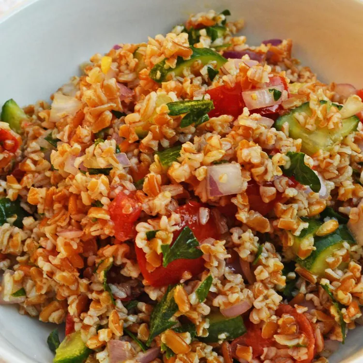

Home
Cucumber Tabbouleh

Look at this tasty dish
Description
A delicious bulgur salad that is filled with tomatoes, green onions, and cucumber. It is seasoned in the traditional way, with fresh mint and lemon juice.
Ingredients
- 1 cup bulgur
- 1 ⅔ cups boiling water
- ⅓ cup olive oil
- ⅓ cup lemon juice
- 1 cup chopped green onions
- 1 cup chopped fresh parsley
- ¼ cup chopped fresh mint
- 3 tomatoes, chopped
- 1 cucumber - peeled, seeded and chopped
- 1 teaspoon salt
- ground black pepper to taste
Steps
- Combine bulgur and boiling water in a large bowl. Cover, and set aside to soak for 1 hour.
- Add oil, lemon juice, onions, parsley, mint, tomatoes, and cucumber; toss to combine. Season to taste with salt and black pepper. Cover, and refrigerate for at least 1 hour.
source